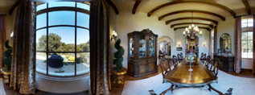

An image-to-image GAN maps directly from reprojections of incomplete point-points to full high-resolution RGB-D images. Solving this problem would make photos and videos interactive and immersive, with applications not only to content creation but also robotics and embodied AI. They show that the model is useful for generative data augmentation. A new model improves success rate by up to 1.5% over a state of the art baseline on the R2R benchmark. The code will be made available.
An image-to-image GAN maps directly from guidance images to high-resolution photorealistic RGB-D images. They eschew many components of Pix-ProfelSynth: di-erentiable rendering, support set generation using PixelCNN++and a VQ-VAE. The model is capable of composing compelling 3D synthetic environments from a single image, which can be used to produce realistic video renderings. They also outperform Pathdreamer in 60% of comparisons and 77% in 77% of tests.
NeRF models have gained popularity for novel view synthesis. The primary challenge of this task is handling both inpainting of missing pixels and outpainting large regions of the image from limited context, while maintaining consistency with the existing scene. The closest works to ours are PixelSynth and Pathdreamer, which they discuss extensively in Sec. 1.2. They examine whether novel view syntheses can be used to create new training trajectories for a navigation agent by spatially-perturbing camera viewpoints post hoc.
They propose a simple, single-stage, end-to-end model to convert a guidance image directly into a high-resolution photorealistic RGB-D output. Given a new pose Pt, they re-proselyproject the accumulated point cloud, similar to into an image from that viewpoint. They use an encoder-decoder CNN-driven CNN-architecture inspired by RedNet and ResNet-101 as the encoder, and use RealEstate10K to accommodate both formats.
A single encoder is used for processing both the RGB and depth inputs in the guidance, but separate decoders are used for predicting RGB output and depth output. Skip connections are introduced between the encoder and decoder to preserve spatial information. They also experimented with the SVG structure generator, which learns a prior distribution which models stochasticity in the predictions. They found that generation quality was worse when this module was included (as measured by FID and visual inspection), despite improvement in image diversity (more details in Sec. 4.2)
They compare to PixelSynth, which builds on and outperforms SynSin and Pathdreamer They use a simpler model that does not require semantic segmentation inputs. The predictions are clearer than PathDreamer, despite using a simple model that doesn't need semantic segmentations. They report automated Fr´echet Inception Distance (FID) scores (lower is better) and pairwise human evaluations of image quality. They also report automated FID scores and FID scorers (lower than better)
PixelSynth and Pathdreamer report results on Matterport3D. However, the evaluation procedures are not comparable. They evaluate in two settings – novel viewpoints in envi-ronments seen during training (Val-Seen) and previously unseen (Val Unseen) On Val-unseen, the model outperforms Pathdreamers for both 1 step and 1–6 step prediction in all settings. They report FID scores for the generated RGB images. In Tab 1, 1 they report. FID. scores (↓) for generated RGB sequences on R2R paths in Mat-
They use a far simpler model than Pathdreamer that does not require ground-truth semantic segmentation. In unseen environments (which is the focus), the model performs better on FID score at every step. They perform human evaluations of 1,000 image pairs from the model and PathDreamer. They also perform better on multiple steps of prediction on Matterport3D, but perform worse on multi-step prediction in Val-Seen environments. For images with unanimous preference (preferred by 5/5 raters) the model is greatly preferred: 30.7% compared to 12.3%.
The RealEstate10K dataset consists of a collection of YouTube walkthrough videos of real estate properties. They use a shared encoder with two separate decoders for RGB and depth. Random masking and convolutional layers are added to improve generation quality. They experimented with a version of the model that instead replaces the generated depth channel with the ground-truth depth channel, to explore whether this would help enforce RGB and ground truth consistency. The PixelSynth and the Pixel Synth models, which they compare to, include a depth estimation mod--craftedule which is trained on the RE10K.
FID scores for ablations on Matterport3D, using 1 context image. Qualitative comparison of predictions on the RealEstate10K dataset. They train the model for single-step prediction, using a camera rotation of 20° − 60° that are estimated to be 1m apart, and evaluate with an image resolution of 256 × 256.1m. They evaluate using the same image resolution as that of the same PixelSynth used in Sec. 4.1.
The model outperforms existing methods on this task, achieving an FID score of 23.5 compared to 25.5 and 34.7 achieved by PixelSynth and SynSin They also performed human evaluations on a subset of only outdoor scenes. The human annotators significantly prefer images generated by the model over Pix-elSynth, rating them as more realistic in 77.3% of cases. In addition, for images that achieve unanimous preference (selected by 5/5 raters), the model is mas-oglely preferred.
They focus on vision-and-language navigation (VLN) using the Room-to-Room (R2R) dataset This task requires an agent to follow natural language navigation instructions in unseen photorealistic indoor envi-ronments. They hypothesize that spatially perturbing the loca-likely captured images could reduce over-tting and improve generalization. To implement synthetic trajectory augmentation, they re-sample pano locations while training the VLN agent. This improves the agent’s Success Rate (SR) on the R2R Val-Unseen split from 62.2% to 67.3%.
Synthetic trajectories from the model can improve an already state-of-the-art model by up to 1.5% on Val-Unseen. Image-based data augmentations (Row 3) and a SimCLR renders alone (Row 4) are ineffective. VLN performance on R2R comparing against best performing prior work. The pano is generated at 1024 × 512 resolution by the model trained on Matterport3D, using the nearest two ground-truth RGB-D panos as context.
The R2R dataset is a mature benchmark at this time, and such gains do not come easily. Unlike Pathdreamer, which requires integration at inference time, the visual aug-driven model is integrated at inference. This model outperforms all published prior work (Tab. 5) and on the unseen test set this model outperform all published work. In contrast, SimCLR image-based data augmentation and textured mesh based renders using Habitat